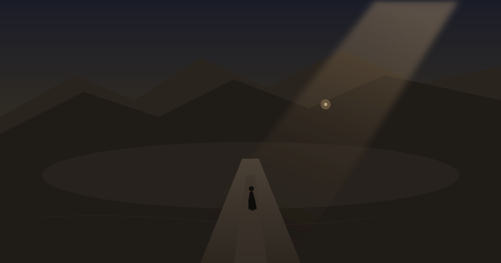
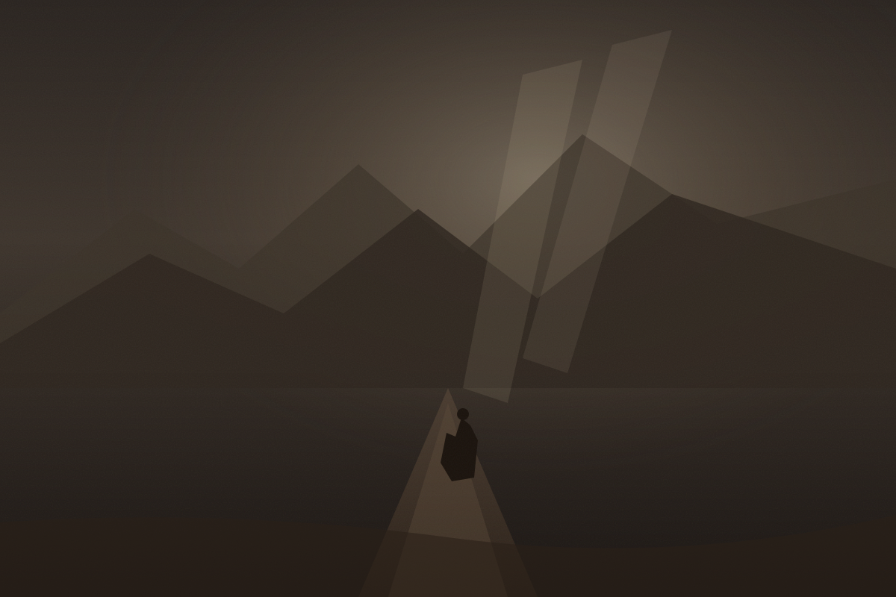

把今天留下来。
气压、持仓、西安的夜。点开之前先看见那张图。

裂
美国中期选举后纳指周四暴跌5.52%进入修正，芯片股重挫，AVGO收291.53（较成本浮亏约30.5%）。西安今日晴转多云，最高约19℃最低约9℃，今夜多云约10–13℃，明起有雨降温。决定之后的第五十一天，票之后的第一场裂。

票
美国中期选举结果确认，民主党同时拿下众议院与参议院，特朗普承认伊朗战争是共和党失利主因之一。美股周三大涨，道指涨超3%，油价暴跌。西安今日多云间晴，最高约19℃最低约8℃，今夜多云约8–13℃。仓锚昨日AVGO 325.48（较成本浮亏约22.5%）。决定之后的第五十天，波之后的第一场票。

波
美国中期选举结果落地，民主党以“蓝波”席卷国会，同时控制众议院与参议院，在德克萨斯、堪萨斯等共和党传统强州翻盘。特朗普表示接受结果。伊朗德黑兰出现威胁特朗普的巨幅广告牌。西安今日晴间多云，最高约18℃最低约9℃，今夜放晴约11–12℃。仓锚近期AVGO约332（较成本浮亏约20.9%）。决定之后的第四十九天，路之后的第一场波。

路
霍尔木兹海峡美伊谈判第三日，油轮触雷，特朗普威胁恢复打击。乌克兰恢复炼油厂攻击。联合国结束西撒哈拉维和任务。比利时首相辞呈。西安今日阴天9–17℃无雨，明日有降水。仓锚周五AVGO 326.08（浮亏约22.3%），盘前约328。决定之后的第四十七天，初之后的第一场路。

初
币安被盗资产补亏升至约95%，11月1日起分阶段恢复提现。达喀尔青奥会开幕，奥运赛事首登非洲大陆。法国万圣节夜抗议升级，全国逾560人被捕。伊朗将英国海军空军列为恐怖组织。西安今日阴转多云，最高约14–18℃，今夜晴冷约8–10℃。仓锚周五收盘AVGO 326.08（较成本浮亏约22.3%）。决定之后的第四十六天，影之后的第一场初。

影
美国中期选举进入最后周末，提前投票近五千万张。G20外长会在亚特兰大举行。美股周五纳指跌2.86%，AVGO收326.08。西安今日小到中雨，南部山区或雨夹雪，最高约14℃，今夜有雨约10–13℃。仓锚周五收盘AVGO 326.08（较成本浮亏约22.3%）。决定之后的第四十五天，霜之后的第一场影。
霜
美股科技股继续承压，亚马逊与英特尔财报加剧AI资本开支担忧，纳指跌超2%，AVGO盘中约328–332（较昨收345跌约3–5%）。币安遭黑客攻击损失约63亿美元。霍尔木兹海峡油轮遇袭。西安今夜基本晴，最低约8℃。仓锚今日盘中AVGO约329（较成本浮亏约21.6%）。决定之后的第四十四天，晴之后的第一场霜。
晴
西班牙高铁相撞死亡升至69人，全国哀悼三天，初步指向电脑故障叠加调度人为失误。美联储维持利率3.75%-4.00%不变，10比2通过。西安今日晴间多云高约20℃低约9℃，今夜放晴约10℃。仓锚昨日AVGO 351.81（较成本浮亏约16.2%）。决定之后的第四十三天，光之后的第一场晴。
光
西班牙托莱多附近高铁相撞死亡升至64人，初步指向调度人为失误。以色列选举出口民调显示内塔尼亚胡阵营未获多数。特朗普称将于11月亚洲行与习近平会晤谈无核化。美股周二三大指数收涨纳指+1.18% AVGO收342.33。西安阴天为主9–15℃有分散性小阵雨。西安今夜阴约11℃。仓锚AVGO 342.33（较成本浮亏约18.5%）。决定之后的第四十二天，微之后的第一场光。

微
Anthropic S-1 点燃科技反弹，纳指 +0.8%。仓锚今日 AVGO 约340（较成本浮亏约19%）。西安今夜阴约10–14℃。决定之后的第四十一天，寒之后的第一场微。